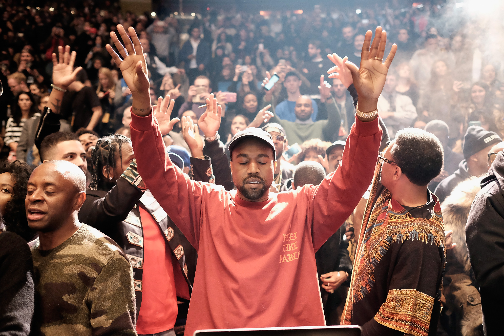

Wu-Tang Clan is an American hip hop group from Staten Island, New York City, originally composed of East Coast rappers RZA, GZA, Ol' Dirty Bastard, Method Man, Raekwon, Ghostface Killah, Inspectah Deck, U-God and Masta Killa. Longtime collaborator Cappadonna became an official member in 2007. Wu-Tang Clan are regarded as one of the most influential hip-hop groups of all time.
Wu-Tang Clan has released four gold and platinum studio albums. Their 1993 debut album, Enter the Wu-Tang (36 Chambers), is considered one of the greatest albums in hip hop history.The group has introduced and launched the careers of a number of affiliated artists and groups, collectively known as the Wu-Tang Killa Bees.In 2008, About ranked them "the No. 1 greatest hip hop group of all time".Kris Ex of Rolling Stone called Wu-Tang Clan "the best rap group ever".In 2004, NME hailed them as one of the most influential groups of the last ten years.
The Clan Was Formed in the 1990’s having RZA as the clan’s Leader
And on Production who helped bring their first Single "Protect Ya Neck"
To light bringing a massive spotlight on their upcoming project and building up the hype for their debut album Enter the Wu-Tang (36 Chambers) which of course was regarded one of the best Hip Hop albums of all-time And so placing at the Clan as One of the best groups of all time.
The Editor's Segment
As I became bored with my playlist a few years ago and turning on my TV to find Pulp Fiction( a 1994 film dir by Quentin Tarantino) saw that the soundtrack for the movie was produced by RZA as I searched the web for RZA I came across the Wu Tang Clan hearing this grimy very explicit rhymes
Made me fall in love with The Clan and appreciating their influence on Hip Hop.
My favorite Lyrics
"live action from the door/Shawty dime, let the whole team smash her on the tour/I splash bravado, fast cash aficionado/Savage vandal, I'm a legend of tomorrow/Painting the truth, here's proof, ain't it the truth/So ill a nigga spit with a containment suit" - Inspectah Deck
For More Wu Tang Releases Click Here!
Kanye West
Kanye Omari West (born June 8, 1977), is an American rapper, singer, songwriter, record producer, entrepreneur and fashion designer. His musical career has been marked by dramatic changes in styles, incorporating an eclectic range of influences from soul, baroque-pop, electro, indie rock, synth-pop, industrial and gospel. Over the course of his career, West has been responsible for cultural movements and progressions within mainstream hip hop and popular music at large.
Born in Atlanta and raised in Chicago, West first became known as a producer for Roc-A-Fella Records in the early 2000s, producing hit singles for recording artists such as Jay-Z, Ludacris and Alicia Keys. Intent on pursuing a solo career as a rapper, West released his debut album The College Dropout in 2004 to widespread critical and commercial success, and founded the record label GOOD Music. He went on to experiment with a variety of musical genres on subsequent acclaimed studio albums, including Late Registration (2005), Graduation (2007), and the polarizing but influential 808s & Heartbreak (2008). He released his fifth album My Beautiful Dark Twisted Fantasy in 2010 to further rave reviews, and has since succeeded it with Yeezus (2013) and The Life of Pablo (2016), as well as full-length collaborations Watch the Throne (2011) and Kids See Ghosts (2018) with Jay-Z and Kid Cudi respectively.
West's outspoken views and life outside of music have received significant media attention. He has been a frequent source of controversy for his conduct at award shows, on social media, and in other public settings, as well as his comments on the music and fashion industries, U.S. politics, and race. His marriage to television personality Kim Kardashian has also been a source of substantial media attention. As a fashion designer, he has collaborated with Nike, Louis Vuitton, and A.P.C. on both clothing and footwear, and have most prominently resulted in the Yeezy collaboration with Adidas beginning in 2013. He is the founder and head of the creative content company DONDA.
West is among the most critically acclaimed musicians of the 21st century and one of the best-selling music artists of all time with over 120 million records sold worldwide.[4] He has won a total of 21 Grammy Awards, making him one of the most awarded artists of all time and the most Grammy-awarded artist of his generation.[5] Three of his albums have been included and ranked on Rolling Stone's 2012 update of the "500 Greatest Albums of All Time" list and he ties with Bob Dylan for having topped the annual Pazz & Jop critic poll the most number of times ever, with four number-one albums each. Time magazine named him one of the 100 most influential people in the world in 2005 and 2015.
The Editor's Segment
Kanye Holds a speacial place in My heart as he was one of the first artists the got me into Hip Hop, The first Kanye track I ever listened to was ‘Heartless’ of his album ‘808s & Heartbreak’ I was instantly hooked hearing his use of 808s and Autotune I Realised he was something special
As I surfed through his discography I knew He deserved a spot in my top 10 list and on this Website.

For More Kanye West Releases Click Here!
Kendrick Lamr
Kendrick Lamar Duckworth (born June 17, 1987) is an American rapper, songwriter, and record producer. He is regarded as one of the most skillful and successful hip hop artists of his generation, with various media outlets branding him the "new king of hip hop”.
Raised in Compton, California, Lamar embarked on his musical career as a teenager under the stage name K-Dot, releasing a mixtape that garnered local attention and led to his signing with indie record label Top Dawg Entertainment (TDE). He began to gain recognition in 2010, after his first retail release, Overly Dedicated. The following year, he independently released his first studio album, Section.80, which included his debut single, "HiiiPoWeR". By that time, he had amassed a large online following and collaborated with several prominent hip hop artists, including The Game, Busta Rhymes, and Snoop Dogg. Lamar's major label debut album, good kid, m.A.A.d city, was released in 2012 by TDE, Aftermath, and Interscope Records to critical acclaim. It debuted at #2 on the US Billboard 200 and was later certified platinum by the RIAA. The record contained the top 40 singles "Swimming Pools (Drank)", "Bitch, Don't Kill My Vibe", and "Poetic Justice". His critically acclaimed third album To Pimp a Butterfly (2015) incorporated elements of funk, soul, jazz, and spoken word. It debuted atop the charts in the US and the UK, and won the Grammy Award for Best Rap Album at the 58th ceremony. In 2016, Lamar released Untitled Unmastered, a collection of unreleased demos that originated during the recording sessions for Butterfly. He released his fourth album Damn in 2017 to further acclaim; its lead single "Humble" topped the US Billboard Hot 100 chart.
Aside from his solo career, Lamar is also known as a member of the West Coast hip hop supergroup Black Hippy, alongside his TDE label-mates and fellow South Los Angeles–based rappers Ab-Soul, Jay Rock, and Schoolboy Q.
Lamar has received many accolades over the course of his career, including twelve Grammy Awards. In early 2013, MTV named him the "Hottest MC in the Game", on their annual list. Time named him one of the 100 most influential people in the world in 2016.In 2018, Damn became the first non-classical and non-jazz album to be awarded the Pulitzer Prize for Music.
The Editor's Segment
I came across Kendrick from another Hip Hop Head friend of mine as he recommended his album ’To Pimp A Butterfly’ this album was a weird one for me as I had never heard Jazz be the lead in a hip hop album as I got to the 3rd listen of this album I became very appreciative of the album’s sentimental value for what Kendrick actually talks about on this album, as he goes through relationships, politics and just straight up finessing in such a beautiful way that It shot this album to the top of my favorite album ever.
For More Kencrick Lamar Releases Click Here!
Logic
Sir Robert Bryson Hall II (born January 22, 1990), known by his stage name Logic, is an American rapper, singer, songwriter, and record producer. Raised in Gaithersburg, Maryland, Logic developed an interest in music as a teenager, and ventured into a musical career in early 2009 releasing Logic: The Mixtape and a mixtape titled Young, Broke & Infamous in 2010. He signed with Visionary Music Group, before releasing three more mixtapes over three years.
His fourth mixtape, Young Sinatra: Welcome to Forever (2013), was released to critical acclaim, and allowed Logic to secure a recording contract with Def Jam Recordings. He later released his debut studio album Under Pressure in October 2014, which debuted at number four on the U.S. Billboard 200, eventually becoming certified gold by the Recording Industry Association of America (RIAA) and having sold more than 171,000 copies. Logic's second studio album The Incredible True Story was released in November 2015, receiving mostly positive reviews from critics. Also certified gold in the U.S., it sold over 185,000 copies. Logic released his fifth mixtape, Bobby Tarantino, in 2016.
Logic's third studio album Everybody (2017) was his first to debut at number one in the U.S on the Billboard 200. It sold 247,000 album-equivalent units, of which 196,000 were pure album sales.The album spawned his first international top 10 single as a lead artist, "1-800-273-8255", which reached number three on the Billboard Hot 100. In March 2018, Logic released his sixth mixtape, Bobby Tarantino II, a sequel to his 2016 mixtape. It also landed at number one on the Billboard 200, selling 119,000 equivalent album units in the first week.
The Editor's Segment
I came across Logic through the weird Youtube algorithm Hearing his ‘The Incredible True Story’ concept album taking me on a trip to outer space in the post planet earth humanity. His rhymes and lyrical play and just his strictly original creativity was what had really drawn me to him.